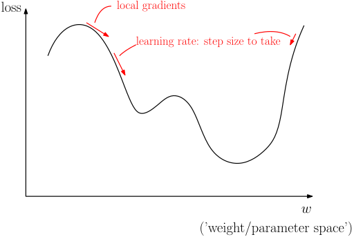
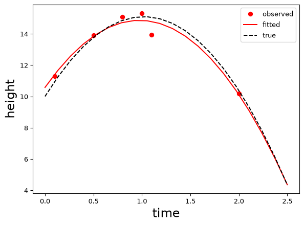
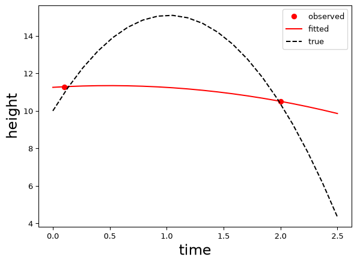
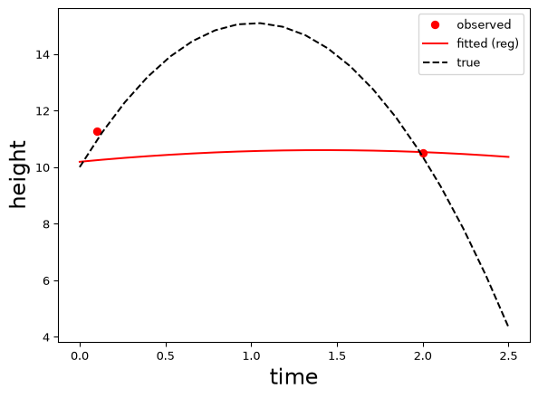

Currently (as of 2026), the most exciting class of model in machine learning is undoubtedly the neural network. However, it is worth first spending time on a simpler class of model, linear models. Why? Firstly, they are more than sufficient for many practical applications, particularly with well-structured, ‘tabular’ data. Linear models are simple yet powerful, well-understood, and easy to ‘train’. While neural networks can provide exceptional performance, particularly on ‘unstructured’ image, video, language, etc. data, they can be challenging and computationally intensive to train. For many engineering and scientific applications, linear models suffice. There are at least two other reasons to consider linear models: 1) neural networks combine many ‘layers’ of what amount to linear models with nonlinear ‘activation functions’, and understanding the linear components aids in understanding the overall model. In fact, for some choices of activation function, neural networks can be thought of roughly as (very large) piecewise linear functions of their inputs. 2) They serve as an easy setting to explore the incorporation of engineering and scientific information in the form of additional regularisation terms.
What is a linear model?
What does it mean for a model to be linear? What is it linear in terms of? Generally speaking, the concept of a linear operation (or linear operator) is that it maps linear combinations of vectors to linear combinations of the operation applied to each vector:
\[\mathcal{L}(a v_1 + b v_2) = a\mathcal{L}(v_1) + b \mathcal{L}(v_2)\] for some linear operation \(\mathcal{L}\), any scalars \(a\), \(b\), and any two vectors \(v_1, v_2\) to which \(\mathcal{L}\) can be applied (note: I do not bold my vectors!).
This is quite abstract! More concretely, any (finite-dimensional) linear operator can be represented by matrix multiplication. Note, by the rules of linear (matrix) algebra: \[A(a v_1 + b v_2) = aAv_1 + bAv_2\] so clearly matrix multiplication is linear in this sense. Importantly, in statistics and machine learning, the term linear usually means linear in the unknown parameters (weights, coefficients) of the model.
This can be shown to mean our target\(y\) is expressed as a linear combination of (potentially nonlinear) feature vectors\(F_i = f_i(x_i)\), each of which may be a function of some raw feature vectors\(x_i\): \[
y \approx F_1 w_1 + F_2 w_2 + \dots + F_n w_n
\] where \(w_i, i = 1,\dots,n\) are the (scalar) model parameters (or weights in neural network terminology).
To see how we can put this into matrix form, we \(\dots\)
Linear models: matrix form
\(\dots\) first identify the \(m \times n\) feature matrix \(F\) as the matrix having \(n\) columns, each given an \(m\)-dimensional \(F_i\), i.e.: \[F = \begin{bmatrix}F_1\ \vert & F_2\ \vert & \dots\vert\ F_n\end{bmatrix}\] and collect the weights into a vector \(w\) where \[w = \begin{bmatrix}w_1\\ w_2 \\ \vdots\\ w_n\end{bmatrix} = w_1 e_1 + w_2 e_2 + \dots w_n e_n\] where the \(e_i\) are unit vectors with zeros in all entries except the \(i\)th, where they are one. \[Fw = w_1 Fe_1 + w_2 F e_2 + \dots + w_n F e_n = w_1F_1 + w_2 F_2 + \dots + w_n F_n\] where the first equality follows from linearity and the second since \(F e_i = F_i\) = the \(i\)th column of \(F\) (exercise: verify!).
This actually demonstrates a very useful alternative (but equivalent) perspective on matrix multiplication in linear algebra: a matrix times a vector is equal to a linear combination of the matrix columns with coefficients given by the vector entries.
This is all a long way of writing that our linear model takes the form \[y \approx F w\] for target \(y\), feature matrix \(F\), and vector of parameters (weights) \(w\). The matrix \(F\) is often written as \(X\) and called the design matrix, giving \[y \approx X w.\]
Example
Consider the following physics model of a projectile launched from a height \(h_0\) at velocity \(v_0\) subject to gravity but neglecting air resistance: \[\frac{d^2y}{dt^2} = -g\] with initial conditions \[
y(0) = h_0,\ \ \frac{dy}{dt}(0) = v_0.
\] This has solution \[
y = h_0 + v_0t -\frac{g}{2}t^2
\]
Now, suppose we observe (potentially noisy) data \((t,y)_1, (t,y)_2,\dots, (t,y)_m\) = \((t_1,y_1), (t_2,y_2),\dots, (t_m,y_m)\) but do not know \(h_0\), \(v_0\), or \(g\). The initial height \(h_0\) is labelled \(y_0\) in the figure.
To predict (using our physics knowledge!) the (unobserved) height \(y_{m+1}\) at a new (given) time point \(t_{m+1}\) we can do the following:
Determine the parameters \(h_0\), \(v_0\) and \(g\) in the physics-based model above that best fit the given ‘training’ data.
Use these and \(t = t_{m+1}\) to predict \(y_{m+1}\).
Example continued
We can consider our observations as approximate (due to noise) instances of our model: \[
\begin{aligned}
y_1 &\approx h_0 + v_0t_1 -\frac{g}{2}t_1^2\\
y_2 &\approx h_0 + v_0t_2 -\frac{g}{2}t_2^2\\
\vdots\\
y_m &\approx h_0 + v_0t_m -\frac{g}{2}t_m^2.
\end{aligned}
\] This can be written in matrix form \[
\begin{bmatrix}
y_1\\
y_2\\
\vdots\\
y_m
\end{bmatrix}
\approx
\begin{bmatrix}
1 & t_1 & -\frac{1}{2}t_1^2\\
1 & t_2 & -\frac{1}{2}t_2^2\\
\vdots&\vdots&\vdots\\
1 & t_m & -\frac{1}{2}t_m^2
\end{bmatrix}
\begin{bmatrix}
h_0\\v_0\\ g
\end{bmatrix}
\] which can be verified either by the usual ‘rows of matrix times column vector’ or ‘linear combination of matrix columns’ interpretations of matrix multiplication.
Thus this model is linear in the unknown parameters\(h_0, v_0, g\) and the feature/design matrix has columns that are (potentially) nonlinear functions of the raw feature \(t\).
The shape of linear models: well-, over- and under-determined linear systems
In our projectile case we might collect many more than three data points. However, our approximate physics-based solution (neglecting noise) is a quadratic, which requires three data points at distinct times to determine its three parameters. If we have more or fewer than three points our matrix equation will involve a non-square matrix! How do we solve this??
Firstly, note that because we expect there to be some noise in our solution, we only expect the matrix equation to hold approximately. Secondly, there is a well-defined approach to solving non-square systems of equations: least squares! Let’s first introduce some terminology, to be discussed in more detail:
Tall systems (with linearly independent columns…) correspond to the over-determined, more-equations-than-unknowns case; a standard solution will not typically exist, but a least squares solution will.
Wide systems are under-determined, with fewer equations than unknowns. If the rows are linearly independent, there are infinitely many exact solutions for any observation vector \(y\). Among these, there is a unique least-norm solution.
Square systems (with linearly independent rows and columns) correspond to a well-determined system, same-equations-as-unknowns case; this is the exception not the norm in statistics and machine learning!
Graphically, we get \(\dots\)
The shape of linear models: well-, over- and under-determined linear systems
Solving tall linear systems
The idea of solving a tall or over-determined system is, rather than solve it exactly, consider the residual\[r = y - Xw\] and minimise the size of this. We have used \(X\) to denote the feature/design matrix. Typically we minimise the sum of squared residuals, i.e. the square of the Euclidean (\(L_2\)) norm of the \(r\) vector \[
\min_{w} ||y-Xw||^2.
\] You may have seen that the solution to this, assuming \(X\) has linearly independent columns can be given explicitly by \[
w = X^+y = (X^TX)^{-1}X^Ty
\] where \(X^+\) is called the (Moore-Penrose) pseudo-inverse. This gives us a best approximate solution in the least-squares sense. If a true inverse exists it will reduce to this (exercise: show this!). Note that this particular explicit expression for the pseudo-inverse only holds for the tall/square case, not, e.g., the wide case.
Packages like NumPy and PyTorch have in-built functions for computing this solution. In PyTorch we can call a least squares solver and extract the solution:
w = torch.linalg.lstsq(X, y).solution
or explicitly compute the pseudoinverse and apply it to the observation vector:
w = torch.linalg.pinv(X) @ y.
Both should give the same answer up to rounding errors, but the former is usually the most efficient and stable!
Solving tall linear systems: gradient descent
In PyTorch we can also solve this directly, though much less efficiently compared to specialised linear solvers, by using gradient descent optimisation. We’ve mentioned this in the last chapter, and will go into more detail when we discuss neural networks properly, but the figure below gives the general idea:

Each time we call optimizer.step() in gradient descent, we update the parameters in the negative gradient direction of the loss, with the learning rate scaling the update. In the examples below, the loss uses all observations, so torch.optim.SGD performs full-batch gradient descent. We will discuss stochastic and minibatch updates when we introduce neural networks.
Solving tall linear systems: example
Here we compare specialised solver solutions and gradient descent.
import torch# True parametersw_true = torch.tensor([10,10,9.81], dtype=torch.float32)# Design matrix X (m x n) X = torch.tensor([ [1.0, 0.1, -0.5*0.1**2], [1.0, 0.5, -0.5*0.5**2], [1.0, 0.8, -0.5*0.8**2], [1.0, 1.0, -0.5*1.0**2], [1.0, 1.1, -0.5*1.1**2], [1.0, 2.0, -0.5*2.0**2],], dtype=torch.float32)# Observation vector y (m-dimensional)y = X@w_true# Add normal noise with mean 0 and standard deviation 1.0torch.manual_seed(42)noise = torch.randn(len(y)) *1.0y_noisy = y + noise# Solution using lstsqlstsq_result = torch.linalg.lstsq(X, y_noisy)w_lstsq = lstsq_result.solution# Solution using pseudoinversew_pinv = torch.linalg.pinv(X) @ y_noisy# Solution using gradient descentw = torch.zeros(X.shape[1], requires_grad=True)# Loss function, sum square residualsdef loss_fn(w):return torch.norm(y_noisy - X @ w) **2# Optimizerlearning_rate =0.005#had to play withoptimizer = torch.optim.SGD([w], lr=learning_rate)# Gradient Descent Loopnum_iterations =10000#quite large!for i inrange(num_iterations): optimizer.zero_grad() loss = loss_fn(w) loss.backward() optimizer.step()# Create a tensor sharing w's data, without gradient trackingw_gd = w.detach()# Comparisonprint("\nUsing torch.linalg.lstsq:")print(w_lstsq)print("\nUsing torch.linalg.pinv:")print(w_pinv)print("\nUsing Gradient Descent:")print(w_gd)print("\nTrue:")print(w_true)
Using torch.linalg.lstsq:
tensor([10.5745, 8.7996, 9.0290])
Using torch.linalg.pinv:
tensor([10.5745, 8.7996, 9.0290])
Using Gradient Descent:
tensor([10.5747, 8.7990, 9.0285])
True:
tensor([10.0000, 10.0000, 9.8100])
Note: the gradient descent solution is very dependent on the learning rate and number of iterations (which needs to be quite large here!), even for such a simple problem. It is not generally a good idea to use this for such a simple problem, but turns out it is a more generalisable approach for more complex problems.
There are also many sophisticated tricks and different optimisers we can use in PyTorch. Here we have used the simplest naive approach.
Solving wide linear systems
In the wide or under-determined case there will typically be many solutions to our linear system. One approach to obtaining a unique solution is to take the ‘smallest’ solution in the least squares sense, i.e. solve \[
\min_w ||w||^2
\] subject to \[w\text{ is a solution to } y=Xw\] The idea is among the possible solutions to the main equations, we choose the smallest one, i.e. the one closest to zero in terms of Euclidean distance (\(L_2\) norm).
When the rows of \(X\) are linearly independent we can obtain the explicit solution \[
w = X^+y = X^T(XX^T)^{-1}y.
\] Note that we again have the (Moore-Penrose) pseudo-inverse, but that this now has a different expression for wide systems.
torch.linalg.pinv(X) returns the pseudoinverse matrix \(X^+\). The corresponding fitted weights are \(w=X^+y\), which we can compute directly using torch.linalg.lstsq(X, y).solution. More generally (regardless of whether tall or wide or conditions on linear independence), the pseudoinverse solution solves the two stage optimisation problem
\[
\min_w ||w||^2
\] subject to \[w\text{ is a solution to } \min_w ||y-Xw||^2\] Now the idea is that among the (possibly approximate!) least squares solutions, we choose the one with minimum norm.
This idea is automatically implemented in torch.linalg.lstsq and torch.linalg.pinv. In contrast, formulating these ideas as a simple gradient descent problem is harder in general. Let’s look at an approximate approach!
Solving linear systems in general
As mentioned, the Moore-Penrose pseudo-inverse can be used to solve linear systems in general, whether tall, wide, or square. This pseudo-inverse can be characterised either in terms of a two-stage optimisation problem or a set of four algebraic equations.
Though beyond the scope of this course, the algebraic characterisation is that the pseudo-inverse of \(X\), \(X^+\) should satisfy \[
\begin{aligned}
XX^+X = X\\
X^+XX^+ = X^+\\
(X^+X)^T = X^+X\\
(XX^+)^T = XX^+
\end{aligned}
\]
Alternatively, to implement the two-stage optimisation idea approximately, we can instead solve \[
\min_w ||y-Xw||^2 + \lambda ||w||^2
\] for a smallregularisation parameter\(\lambda\). We minimise the data-fit term and weight penalty together. As \(\lambda\to0^+\), the solution approaches the minimum-norm least-squares solution \(w=X^+y\), which can still leave a large residual if the model cannot represent the data well. However, non-zero \(\lambda\) can in general have a non-trivial – and even good! – effect on the solution.
Example wide system
import torch# True parametersw_true = torch.tensor([10,10,9.81], dtype=torch.float32)# Design matrix X (m x n), dropping some data pointsX = torch.tensor([ [1.0, 0.1, -0.5*0.1**2], [1.0, 2.0, -0.5*2.0**2],], dtype=torch.float32)# Observation vector y (m-dimensional)y = X@w_true# Add normal noise with mean 0 and standard deviation 1.0torch.manual_seed(42)noise = torch.randn(len(y)) *1.0y_noisy = y + noise# Solution using lstsqlstsq_result = torch.linalg.lstsq(X, y_noisy)w_lstsq = lstsq_result.solution# Solution using pseudoinversew_pinv = torch.linalg.pinv(X) @ y_noisy# Solution using gradient descentw = torch.zeros(X.shape[1], requires_grad=True)# Loss function, sum square residuals + penaltylam =0.00001#lambda param: made it up!def loss_fn(w):return (torch.norm(y_noisy - X @ w) **2+ lam*torch.norm(w) **2)# Optimizerlearning_rate =0.0005#had to play withoptimizer = torch.optim.SGD([w], lr=learning_rate)# Gradient Descent Loopnum_iterations =10000#quite large!for i inrange(num_iterations): optimizer.zero_grad() loss = loss_fn(w) loss.backward() optimizer.step()# Create a tensor sharing w's data, without gradient trackingw_gd = w.detach()# Comparisonprint("\nUsing torch.linalg.lstsq:")print(w_lstsq)print("\nUsing torch.linalg.pinv:")print(w_pinv)print("\nUsing Gradient Descent:")print(w_gd)print("\nTrue:")print(w_true)
Using torch.linalg.lstsq:
tensor([11.2546, 0.3671, 0.7400])
Using torch.linalg.pinv:
tensor([11.2546, 0.3671, 0.7400])
Using Gradient Descent:
tensor([11.2520, 0.3677, 0.7391])
True:
tensor([10.0000, 10.0000, 9.8100])
The solutions are quite a lot worse for the wide system than for the tall system (relative to the true values), as you might expect from having less data to inform our estimates, though they are very close to each other. This latter fact means we have (apparently) successfully implemented the pseudo-inverse using gradient descent (for this case and this choice of parameters…)
Side note:In many cases, the optimiser itself favours ‘simple’ or small solutions without an explicit penalty in the loss. This is called implicit regularisation. If we set \(\lambda=0\) in this linear least-squares example, gradient descent starting from zero approaches the minimum-norm solution, provided the learning rate is small enough for convergence. Try it here! In more general settings, the bias depends on the model and training procedure, including choices such as initialisation and early stopping. We look at implicit regularisation in more detail in ENGSCI 721. However, in our case we are interested in how to introduce explicit regularisation and control the types of bias introduced, so here we include it.
But how well have we fit the (two!) data points?
Estimation and prediction
As mentioned, in order to predict for a new time point using our linear model, we first solve for the estimated parameters (weights), and then propagate these forward to our desired prediction. For a linear model this corresponds to evaluating the value of the new row \[y_{m+1} = x_{m+1}^T\hat{w}\] where \(x^T\) is a new row vector of feature values at the time point for the prediction, generated according to the same recipe used to construct \(X\) at the training points, and now we plug-in the estimate \(\hat{w} = X^+y\). For example, for the projectile we have \[
\begin{bmatrix}
y_{m+1}
\end{bmatrix}
\approx
\begin{bmatrix}
1 & t_{m+1} & -\frac{1}{2}t_{m+1}^2\\
\end{bmatrix}
\begin{bmatrix}
\hat{h}_0\\\hat{v}_0\\ \hat{g}
\end{bmatrix}
\] We can also consider the ‘fitted’ (within sample prediction) values of \(y\). For a tall system this gives \[\hat{y} = X\hat{w} = XX^+y = Hy\] Here the matrix \(H = XX^+\) is called the ‘hat’ matrix and it is a ‘projection’ matrix in data space. Projection matrices are defined by \(HH = H\), i.e. applying them twice does the same thing as applying them once. It is called the ‘hat matrix’ because it ‘puts the hat on’ \(y\). You can think of it as a ‘smoothing’ matrix that maps noisy observations to fitted values. For predictions at ‘in-between’ or ‘out-of-sample’ time points, we keep \(\hat{w}\) fixed and construct new design-matrix rows at those times.
Let’s consider an example! We will use the weight vectors computed using linear least squares in both the tall and wide cases.
Example: constructing \(X\) for prediction
The following function allows us to construct a design matrix to make predictions at any point of interest:
def prediction_design_matrix(t_rows):# make columns separately one_col = torch.ones(t_rows.shape[0], 1) time_col = t_rows.view(-1, 1) quad_col =-0.5* (t_rows **2).view(-1, 1) # Concatenate the columns to form the design matrix X = torch.cat([one_col, time_col, quad_col], dim=1)return X
Using this in the tall and wide cases, respectively, gives \(\dots\)
Example
Tall:

Wide:

Issues
It seems we have a general approach to estimating and predicting with linear models! Unfortunately, however, we have an issue: in the wide-system case, our parameter estimates, and often our predictions too, can be very biased and also unstable due to the small amount of data and large number of possible approximate solutions that fit the data.
Importantly, large, deep neural networks and related modern machine learning models are analogous to wide systems: we have very many (sometimes billions!) of parameters/weights to estimate from (typically) comparably less data.
As discussed, some form of ‘bias’ in the general sense is essentially necessary to make predictions from the data, particularly in the ‘wide’ setting.
However, here our bias is of one particular form – could we do better? And does the amount of bias required relate to the amount of data we have? And can we better choose the bias to get more stable solutions?
Regularisation revisited
An interesting approach to further stabilising solutions is to not target the \(\lambda \rightarrow 0\) limit (at least for finite amounts of data), and instead choose a non-zero value that provides additional penalisation towards \(w = 0\), i.e. we sacrifice some fit to the data in order to get a less variable solution. In statistics this idea is sometimes called the ‘bias-variance’ trade-off: often, we can deliberately introduce bias in order to ‘reduce the variance’ of our solutions, i.e. increase their stability (see ENGSCI 760 and ENGSCI 721).
Thus we solve \[
\min_w ||y-Xw||^2 + \lambda ||w||^2
\] for some other choice of \(\lambda\), not necessarily as small as possible.
This particular form of a linear model plus penalty of this type is often called ridge regression in statistics and machine learning. It’s referred to as (a type of) Tikhonov regularisation in inverse problems (see ENGSCI 721).
We will look at methods for choosing \(\lambda\) shortly. First, let’s look at how, for linear models, we can implement this efficiently when we want to use torch.linalg.lstsq or torch.linalg.pinv rather than direct gradient descent.
Stacking
Consider the squared Euclidean norm (\(L_2\) norm) of some vector \(x\): \[||x||^2 = \Big|\Big|\begin{bmatrix}x_1\\x_2\\\vdots\\x_n\end{bmatrix}\Big|\Big|^2 = x_1^2 + x_2^2 + \dots + x_n^2.\]
Note that we can partition \(x\) into subvectors \(y, z\) and write \(x\) in terms of stacked vectors \[||x||^2 = \Big|\Big|\begin{bmatrix} y\\ z\end{bmatrix}\Big|\Big|^2 = ||y||^2 + ||z||^2\]
In our case, this means we can write \[
||y-Xw||^2 + \lambda ||w||^2 = \Big|\Big|\begin{bmatrix} y-Xw\\ \sqrt{\lambda}w\end{bmatrix}\Big|\Big|^2
\] We can further write the right-hand side as the augmented system \[
\Big|\Big|\begin{bmatrix} y-Xw\\ \sqrt{\lambda}w\end{bmatrix}\Big|\Big|^2 = \Big|\Big|\begin{bmatrix} y\\ 0 \end{bmatrix} - \begin{bmatrix}X\\\sqrt{\lambda}I \end{bmatrix}w\Big|\Big|^2
\] i.e. \[
\Big|\Big| \tilde{y} - \tilde{X}w\Big|\Big|^2
\] where \[\tilde{y} = \begin{bmatrix} y\\ 0 \end{bmatrix}, \ \ \ \tilde{X} = \begin{bmatrix}X\\\sqrt{\lambda}I \end{bmatrix}\] So to solve the penalised linear least squares problem we can solve the standard linear least squares problem in augmented form: \[
\min_w \Big|\Big| \tilde{y} - \tilde{X}w\Big|\Big|^2
\]
Example
import torch# True parametersw_true = torch.tensor([10, 10, 9.81], dtype=torch.float32)# Design matrix X (m x n), with some data points omittedX = torch.tensor([ [1.0, 0.1, -0.5*0.1**2], [1.0, 2.0, -0.5*2.0**2],], dtype=torch.float32)# Observation vector y (m-dimensional)y = X @ w_true# Add normal noise with mean 0 and standard deviation 1.0torch.manual_seed(42)noise = torch.randn(len(y)) *1.0y_noisy = y + noise# Regularisation parameter (lambda)lambda_reg = torch.tensor(0.1, dtype=torch.float32)# Augment the design matrix and observation vector X_aug = (torch.cat([X, torch.sqrt(lambda_reg) * torch.eye(X.shape[1])], dim=0))y_aug = torch.cat([y_noisy, torch.zeros(X.shape[1])])# Solution using least squares with regularisationlstsq_result_reg = torch.linalg.lstsq(X_aug, y_aug)w_reg = lstsq_result_reg.solution# Output the regularised solutionprint(f"Reg. least squares solution: {w_reg}")
Reg. least squares solution: tensor([10.1896, 0.5805, 0.4094])
Fitted:

Note that we have sacrificed some data fit for a ‘simpler solution’. Here the result is not really so good, but the idea of engineering/physics-informed machine learning (that we will see next week) is to penalise towards physical/engineering models at the possible expense of some pure data fitting performance. The idea is that we can generalise beyond the training data in this way.
Solving in PyTorch with gradient descent
Nothing much is changed in our PyTorch implementation – we just use a different \(\lambda\).
# Solution using gradient descentw = torch.zeros(X.shape[1], requires_grad=True)# Loss function, sum square residuals + penaltylam =0.1#lambda param: not as small anymoredef loss_fn(w):return (torch.norm(y_noisy - X @ w) **2+ lam*torch.norm(w) **2)# Optimizerlearning_rate =0.0005#had to play withoptimizer = torch.optim.SGD([w], lr=learning_rate)# Gradient Descent Loopnum_iterations =10000#quite large!for i inrange(num_iterations): optimizer.zero_grad() loss = loss_fn(w) loss.backward() optimizer.step()# Create a tensor sharing w's data, without gradient trackingw_gd = w.detach()# Printprint("\nUsing Gradient Descent:")print(w_gd)print("\nTrue:")print(w_true)
Using Gradient Descent:
tensor([10.1887, 0.5807, 0.4091])
True:
tensor([10.0000, 10.0000, 9.8100])
The result is very similar to what we found with the specialised solver.
Choosing regularisation parameter
One way to choose \(\lambda\) is to fit the model for several values and compare prediction errors on validation data held out when fitting the weights. We choose the value with the lowest validation error. We discuss this approach in the next chapter.